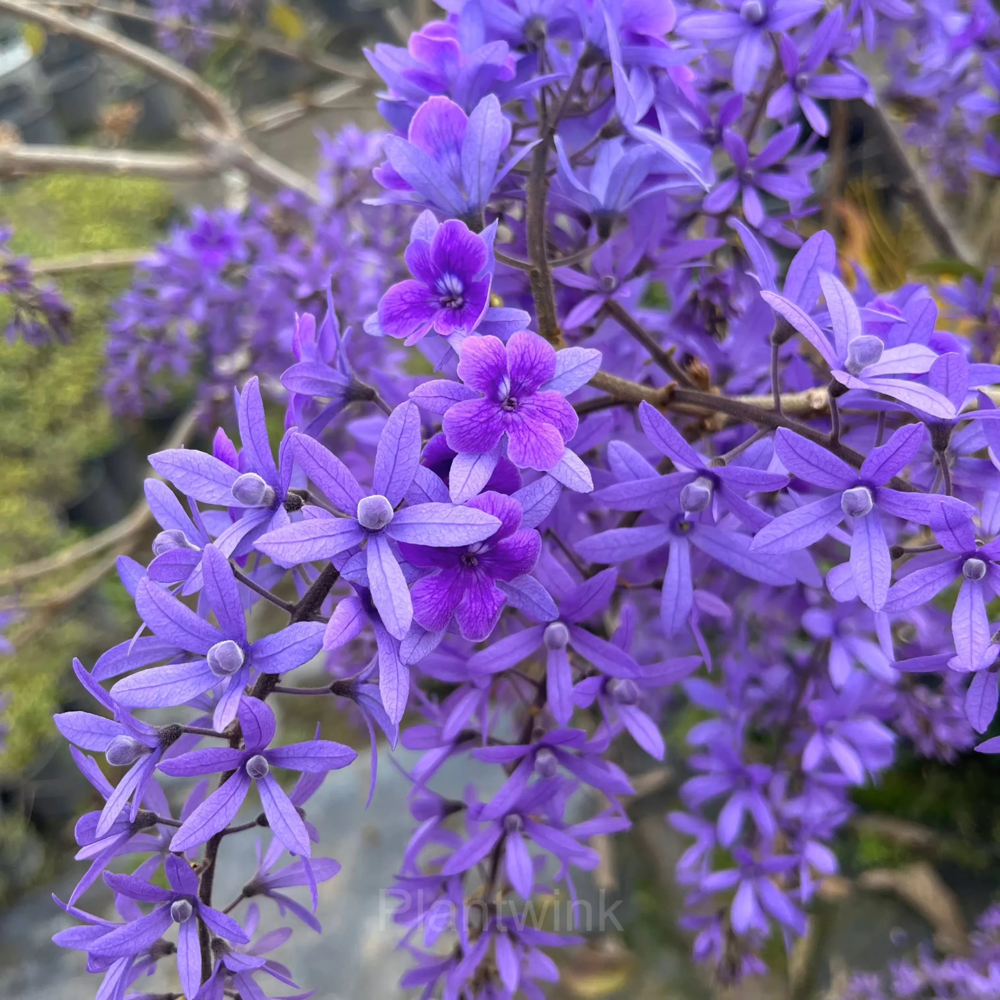

Sandpaper Vine is a fast-growing climbing flowering plant known for its soft purple blooms and slightly rough leaves. It is commonly used for covering fences, pergolas, and garden walls, making it popular in landscaping and ornamental gardening.
Needs full sunlight to partial shade for healthy flowering and growth.
Water regularly, especially during dry periods. Keep soil slightly moist.
Best growth at 22°C – 32°C. Thrives in warm tropical climates.
Use well-draining soil rich in organic matter.
Produces flowers throughout warm seasons under good conditions.
Used for fences, pergolas, vertical gardening, and landscaping decoration
Cause: Overwatering or poor drainage.
Solution: Improve soil drainage and reduce watering.
Cause: Lack of sunlight.
Solution: Move plant to brighter area.
Cause: Insufficient nutrients.
Solution: Apply fertilizer regularly.
Cause: Insect infestation.
Solution: Use natural pest control methods.
Cause: Fast spreading vine.
Solution: Regular pruning and trimming.